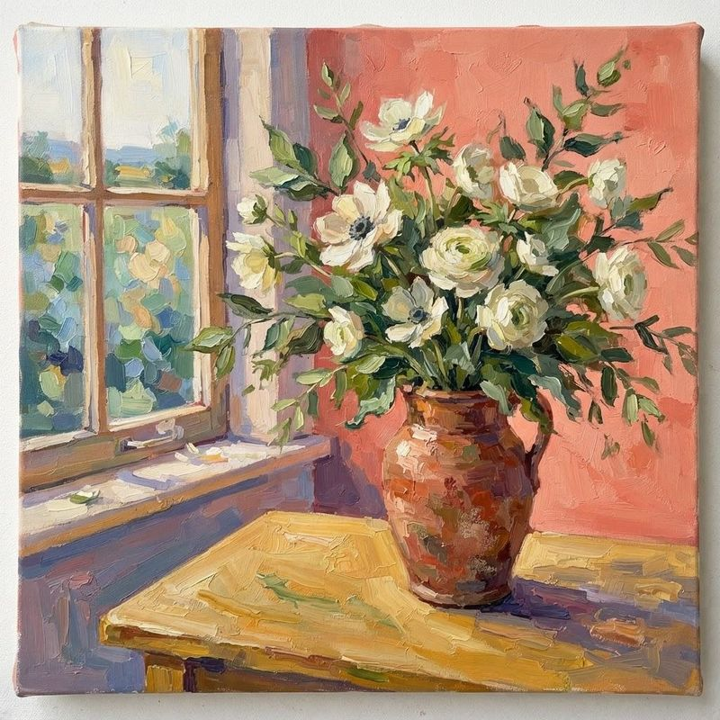
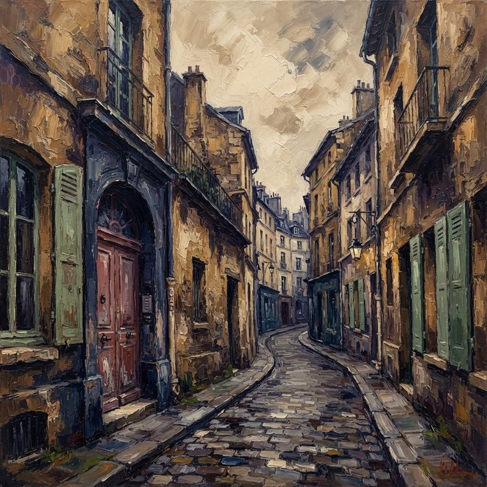
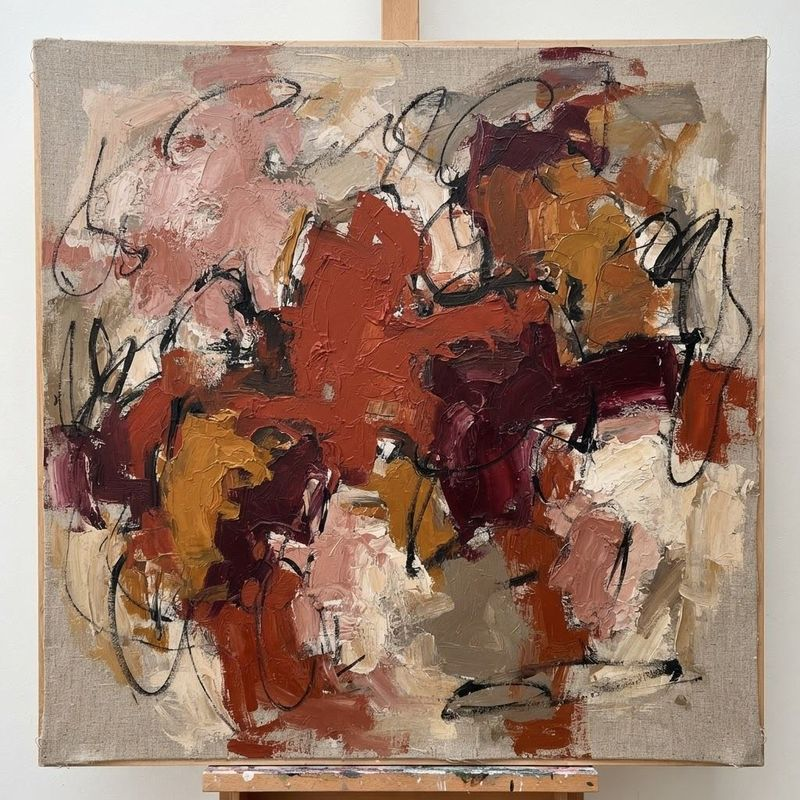

Les œuvres · Une invitation au regard
La présence d’une œuvre.
Figuration, paysages, natures mortes : laissez la couleur ouvrir le dialogue. Pour connaître les œuvres proposées par la galerie, échangez avec Paul DECHEWSKY.
Filtres
6 illustrations
Liste des œuvres
-

Étude en carmin
Composition illustrative, non attribuée.
Demander des informations : Étude en carmin -

Silhouette au bleu
Composition illustrative, non attribuée.
Demander des informations : Silhouette au bleu -

Jardin intérieur
Composition illustrative, non attribuée.
Demander des informations : Jardin intérieur -

La lumière oblique
Composition illustrative, non attribuée.
Demander des informations : La lumière oblique -

Le passage
Composition illustrative, non attribuée.
Demander des informations : Le passage -

Terres sensibles
Composition illustrative, non attribuée.
Demander des informations : Terres sensibles